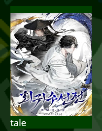

Webnovel Scraper
Built a Python application to convert foreign web-based serialized fiction into offline-compatible EPUB files. Parsed HTML data using the “Requests” and “BeautifulSoup” libraries to get chapter titles, content, and the cover. Accessible through this site soon! If you can find the book on novelfire, you can get an ePub.
